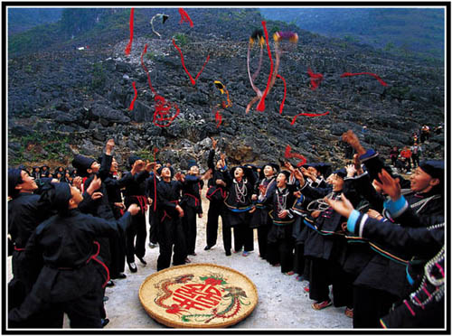

地处中国西南边陲的那坡县，与越南毗邻，是广西壮族自治区80多个县市中壮族比例最高的9个县市之一。该县境内的壮族按自称的称谓划分有12个族群之多，其中，自称为“敏”（亦称布壮）的一个族群，通常被称为黑衣壮。黑衣壮以黑为美，以黑作为穿着和族群的标记。因此，其服饰颜色以黑色为主色调，无论男女老少，从头衣到体衣、足衣，全身上下都是黑的。
但随着社会的发展，人们观念的不断更新，这里的人们在不断地“改装”，从原来的“全身黑”过渡到现在许多年轻人喜欢穿的“上蓝下黑白头巾”的第二代服饰。而第二代服饰是与其他壮族相一致的，这就很难从服眼饰上看得出来了。
而黑衣壮的“黑衣”是历史悠久的。据调查，现在几乎没有人能说出什么时候起就要这番装饰，也几乎没有人能说出这么装饰的原因。他(她)们强调的只能是一些含糊的说法，如“这是一个传统”、“老人家传袭下来的”等等。
推荐阅读-纪录客： 瑶族男子人生三大事之首 瑶乡看“渡戒” “对歌丢铃” 有趣的苗族婚俗 神奇之树与白裤瑶族的生死之恋 云南边境赶集市
最动人的笑脸来迎接客人
上百名黑衣壮人聚在一起，夹道欢迎远方贵客进寨门，
在壮观的场面中，一个“小黑衣壮”也伸着胖胖的小手跑出来鼓掌迎宾。
主妇们精心准备了家酿的拦路米酒迎客。
数百名寨民久久等候在寨门口夹道欢迎远方的客人，远远看去，好像排列着一颗颗黑珍珠。
古柏般的面容镌刻着岁月留下的忧欢之色。

农历正月初十，逢黑衣壮“风流节”时，青年男女以抛红美带的方式传情达意。
黑色代表深沉、凝重、坚毅与顽强，书写着黑衣壮悲壮的历史，也象征着黑衣壮人的性格。
老人面孔如同一段苦难历史的断面。
而更多的充满稚气的面庞则洋溢着旺盛的生命活力……
纯净如水
黑衣壮人能歌善舞，最擅长唱山歌。每当夜幕降临，男女老少便集于村头寨尾，以歌待客，以歌传情。
黑衣壮人好客，不管是否相识，他们总会邀客人到家做客，以最好的饭菜招待客人。
那几张黑衣壮人的脸，饱经沧桑，却透着一种坚毅与顽强。

黑衣壮人心地善良，尊老爱幼是他们的民族传统。
丰富的表情突显出黑衣壮人们生活中的乐趣
杀年猪，炉边烤，一家人温暖地坐在一起围炉夜话。
纪录客：黑色的诱惑——黑衣壮印象
作者：国际在线 来源：国际在线 发布时间：2011-03-08
©sanayard.com 山那羊©民族文化记录网站 2011-2020